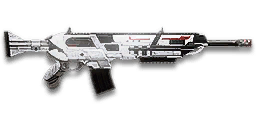

← Back to the SABR-13 comparison
Sage Guide · Terran Republic · Combat Medic
The Terran Republic Combat Medic's precision assault rifle. It costs 1,000 certs, fires two-round bursts — never full-auto — and hits harder per bullet than any other TR rifle. Learn its rhythm and it kills at ranges where other assault rifles just make noise.
The one-line verdict: a two-round burst rifle with an extremely tight aimed cone (0.015°) and the gentlest damage falloff of any starter-tier rifle — 167 damage up close, still 143 past 90 metres. It rewards a calm trigger finger and punishes panic-spraying. Fight at 10–60 metres, in pairs of two, and it will carry you.

The SABR-13 · Special Assault Burst Rifle · 30-round magazine · 1,000 certs
Picture the scene, because you've probably lived it: you're sprinting across a courtyard, an enemy appears, and you do everything at once — hold the trigger down while you're still running, then press aim-down-sights (ADS) a split-second later, finger still down. The sight picture snaps in, it looks precise… and your bullets spray everywhere except the man in your crosshair. He kills you. It feels like the game cheated. It didn't — here's what actually happened.
1 · SprintingYou're running flat out, firing from the hip. Sprinting maxes the cone at 7.0° — the widest it can ever be.
2 · Trigger heldEvery hipfire shot widens the cone further (+0.12° per shot). You are building a miss, one bullet at a time.
3 · ADS — too lateYou press aim mid-hold. The sight picture is neat — but ADS does not reset bloom. The bullets keep flying out of the wide cone.
You started firing from a sprint, from the hip. Sprinting is the least accurate state in the game: your cone of fire starts at 7.0° — fully bloomed, the widest it can ever be. Every shot you fire from the hip widens it further still (+0.12° per shot).
Then you pressed ADS mid-hold — and nothing reset. Aiming down sights does not shrink a cone of fire that is already bloomed. The scope only gives you a precise picture; the bullets keep flying out of the wide cone you built while running and hipfiring. That's the whole mystery: accurate-looking aim, wildly inaccurate gun.
Two timers stack the deck further: your gun needs about 0.3 s to settle after a sprint, and raising the sight itself takes ~0.15 s (the SABR-13's ADS in/out time is 150 ms). Trigger held through all of it means your first half-second of fire is pure confetti — and on a burst gun, those wasted pairs are a quarter of your magazine's killing power gone in one mistake.
1 · Feet. Let go of sprint (and the trigger, if you're already holding it). Stop, or drop into a strafe — anything but a full sprint.
2 · Sight. Press ADS and let the sight come up. This takes a heartbeat — that's fine, your Nano-Regen Device covers the wait, and a live medic is worth more than a rushed shot.
3 · Trigger. Now fire — in pairs. Starting from the aimed cone of 0.015°, your first two-round burst lands where the dot points, and you control the bloom from zero instead of inheriting a maxed-out cone.
Stop → aim → fire. If you take one habit from this entire page, take this one. You'll practise exactly this rhythm in the simulator in section 04.
1 · StopFeet planted, finger off the trigger. Give the sprint ~0.3 s to settle before you do anything else.
2 · AimPress ADS and let the sight come up — ~0.15 s. Your regen covers the wait. Don't touch the trigger yet.
3 · FireNow shoot — from the 0.015° aimed cone. Two-round bursts, release, repeat. The dot means it this time.
Exception — under ~8 mHipfire works here: the 2.0° standing cone is tighter than the chest. No ADS needed, stopping optional — keep moving and hose the chest.
Every enemy infantry has 1,000 health (500 shield + 500 health). Your bullet does 167 damage up close, fading slowly to 143 at long range — the gentlest falloff of any starter rifle, which is why this gun stays dangerous so far out. Headshots count double, leg shots count less (×0.9). That gives you three numbers worth memorising:
| Range | Damage | Head | Chest | Legs | Chest vs shielded Heavy |
|---|---|---|---|---|---|
| Close · 0–10 m | 167 | 3 | 6 | 7 | 9 |
| Mid · 10–50 m | 167→155 | 4 | 7 | 8 | 10 |
| Far · 50–90 m+ | 155→143 | 4 | 7 | 8 | 11 |
Perfect-accuracy times to kill: 3 headshots ≈ 0.20 s, 6 chest shots = 0.50 s up close (5 gaps of 100 ms between shots at 600 RPM). Past 10 m the chest kill takes 7 shots and 0.60 s — and it stays 7 shots all the way out, because your minimum damage is still 143. In real fights you'll land maybe half your rounds — still, this is why the head matters so much on this gun: three head hits end any normal infantry up close.
Full power to 10 m, then a slow, steady slide to minimum at 90 m. The gold line shows High Velocity Ammunition, which pushes minimum damage out to 110 m but starts full power 2 m sooner (8 m).
One gun, four fighting styles. The right technique changes with distance — use the range finder below to see what your bullets do at any range, then learn the four bands underneath it.
How to fight hereAim down sights at the upper chest and neck. Fire in pairs — two or three trigger pulls (4–6 rounds) — then release and re-aim. Your recoil climbs straight up into the head for free damage.
Aim: centre of the chest, from the hip. Keep moving.
Scoping in costs you time and halves your move speed — at arm's length that gets you killed. The SABR-13 has the second-best hipfire of any TR assault rifle: a 2.0° standing cone, 2.5° while moving. Strafe side to side (A/D) while firing pairs so you're hard to track, and let your Nano-Regen Device top you up between duels.
Aim: neck / upper chest. Groups of about 5 rounds — two bursts plus a single, or three quick pulls.
This is where the gun earns its keep: near-full 167 damage, an extremely tight aimed cone (0.015°), and a first shot that kicks less than the rest (×0.75). Start your crosshair at the neck — the natural upward climb walks your shots into the head, and 3 head hits end the fight in a fifth of a second. Strafe between groups while scoped; you're slower, but a moving target still beats a still one.
Aim: chest. Groups of 4–6 rounds (two or three pulls), pause between them.
Damage is sliding toward 155 and your cone of fire blooms if you keep pulling the trigger. Fire a group, release for a split second to let accuracy reset, fire again. The recoil is a straight vertical climb (angle 0°/0°), so pull your mouse gently straight down — no sideways correction needed. Crouch or stand still when you can — both tighten your shots.
Aim: chest. Press B for semi-auto: one aimed shot per pull, at exposed targets only.
At 143 damage you still need only 7 chest hits — but at this range bloom and recoil punish sloppy pairs. In semi-auto every shot is a first shot, so every shot gets the gentle ×0.75 first-shot recoil and your cone resets between pulls. Take these shots at stationary or fleeing targets, medics reviving, and engineers on turrets. Otherwise, your better play is to close the distance behind cover. Knowing when not to shoot is a skill too.
Your accuracy is decided by two things before skill even enters it: what your body is doing (your stance sets the starting cone of fire) and what your finger is doing (every shot grows that cone). The SABR-13 has no full-auto mode at all — it fires two-round bursts, plus a semi-auto mode you switch to with B. "Firing modes" here are something you do with your finger, on top of the gun's own burst.
| Stance | Starting cone | What it means for you |
|---|---|---|
| Sprinting | 7.0° | Maxed out — the widest the cone can be. This is the section 01 disaster: never start firing from a sprint. |
| Hipfire, moving | 2.5° | Walking or strafing from the hip. Fine inside ~8 m, leaks rounds past the target beyond it. |
| Hipfire, standing | 2.0° | Your point-blank default. The 0.28 m ring at 8 m in section 05 is this stance drawn out. |
| Hipfire, crouched | 1.5° | The tightest hipfire you have (2.0° if you crouch-walk). Crouch when holding a doorway from the hip. |
| Aimed (ADS), feet planted | 0.015° | Standing or crouched makes no difference here — over a hundred times tighter than hipfire. This is why section 01's order matters. |
| Aimed (ADS), strafing | 0.15° | Ten times wider than planted, and you move at half speed (0.5×). Strafe between bursts to stay hard to hit; plant your feet during each burst. (Crouch-walking while aimed is tighter still, 0.075°.) |
| Mode | How your finger does it | Use it at |
|---|---|---|
| Two-round bursts — the gun's own mode | One trigger pull fires exactly 2 rounds, then stops. Pull again for the next pair — there is no enforced delay between bursts, so a fast, well-timed finger runs the gun at its full 600 RPM | Everything, 8–60 m. This is the gun: pairs, not sprays. |
| Groups of ~5 — the default rhythm | Two or three quick pulls (4–6 rounds), release for ~0.15 s, pull again. 6–8 rounds is fine while you're learning | Almost everything, 8–60 m. Each release resets the cone, so every group starts at 0.015°. |
| Semi-auto | Press B to switch. One aimed shot per pull, with a real pause between | 60 m and out, at exposed or stationary targets. Every shot is a first shot, so every shot gets the gentle ×0.75 first-shot recoil. |
| The hold-down | Hold the trigger and let the pairs run together | Point blank only, or suppressing a doorway. Bloom maxes out fast — past ~8 rounds you're spraying, not aiming. Never hold down at range. |
Two things about the cone that beginners get wrong. First, the cone grows by the bloom per shot from shot 1 — 0.06° per aimed shot, 0.12° from the hip. There is no bloom freeze and no free shots: the first shot already widens the cone for the second. Second, the n_still numbers (2 aimed, 4 hip) are not free shots either — they are the ADAD window: your first 2 aimed shots (4 from the hip) land while you are still standing still, before you start strafing. The cone still grows during them; the window is about your feet, not your gun.
Recoil, for the record: 0.40° vertical per shot, but the first shot of each burst kicks only ×0.75 — burst guns are built this way, and it is why every group starts flat. Horizontal recoil is ±0.16° with a 0.3° tolerance (at most two kicks in one direction before it must come back), the angle is 0°/0° — straight up, no sideways drift — and it recovers at 18°/s after 100 ms. Pull straight down, and the gun comes back to you between groups.
A target 30 m away, aiming down sights. Press and hold FIRE (mouse, touch, or hold Space with the button focused) and watch the holes walk wider the longer you hold — that's firing from an ever-growing cone. This gun is different from the full-auto guns in this series: each trigger pull fires exactly 2 rounds, then a short gap before the next pair — the gap is your finger re-pulling, not the gun: the wiki is explicit that there is no enforced delay between bursts, so a fast finger runs the pairs together at the full 600 RPM. Release, let the cone reset, fire again. Aim for groups of 5 rounds; 6–8 is tolerable while you're new. This practice window is shared by the whole Sage series: it's driven by a weapon profile plugged into the window — here the SABR-13's (600 RPM, 0.015° starting cone, 0.06° bloom per shot, 2-round bursts, target at 30 m) — and the spread is drawn at true scale from those numbers.
Cone of fire — fills as you hold, empties when you release.
Your groups will be graded here — green at 5 rounds, tolerable up to 8.
Some things are easier to show than to say. Here's what your bullets actually do: how wide hipfire spreads at 8 metres, what a good burst rhythm looks like, and what the 2x sight really changes. The hands-on version — pulling the trigger yourself, two rounds at a time — is the practice window in section 04.
A full-size target 8 m away — an arm's-length room fight. The rings show where hipfire rounds land around your aim point (the chest). Sizes are drawn to scale from the gun's real cone-of-fire numbers.
Read it this way: standing still, the 0.28 m ring sits comfortably inside the chest — most rounds hit a target this size, which is why hipfire works point-blank. But move and it grows to 0.35 m, and the rings only grow with distance while the man doesn't. Past ~10 m that's rounds missing entirely: the exact moment to switch to aiming down sights, where the spread shrinks to a dot. (Ring sizes use the real geometry: spread diameter = 2 × distance × tan(cone ÷ 2).)
Every shot widens your cone of fire ("bloom"). Releasing the trigger for a heartbeat resets it. Same 18 rounds, two very different outcomes:
The target pattern is groups of about 5 rounds — that's the ideal. Groups of 6–8 are fine while you're new (call it newbie tolerance). Past that, the bloom (0.06° per shot aimed, 0.12° from the hip) keeps growing with every shot — remember, it grows from shot 1, there are no free shots — so the extra bullets mostly decorate the wall behind your enemy instead of hitting him. Short groups also leave you rounds for the second enemy — remember, the magazine is only 30.
No zoom. The target at 35 m is small but the view is wide open — you see the crate, the tower, and the next enemy coming. Fast to aim, nothing blocks your edges. Best inside ~40 m.
Same target, same 35 m — but he looks twice as tall, so placing shots on his chest and head gets much easier. The price: your view narrows to the round window, the crate and tower are gone, and close targets feel fast and huge. Best at 25–60 m — this gun's home ground.
That's the whole 30-cert decision from section 06 in one picture: 1x for awareness, 2x for precision. Most veterans carry both and swap per base — indoors 1x, open ground 2x.
First, the price of admission: the gun itself costs 1,000 certs (or 699 Daybreak Cash). Nothing below is included — every attachment is bought separately, optics for 30 certs each and everything else for 100. Buy in the order shown and stop whenever the gun feels right. Two things this gun can not mount, so don't go looking: no Soft Point Ammunition and no Flash Suppressor — and there is no Extended Magazine either.
A clean red-dot sight with no zoom. Your default once you buy it — the gun ships with iron sights only.
Good: everywhere indoors and out to ~40 m — which is most PlanetSide fights.
Bad: picking out targets past 50 m; that's what the 2x is for.
Doubles your view magnification. Costs almost nothing — the price of a few kills.
Good: open-field bases, tower fights, and your 25–60 m burst game — this gun's home ground. Swap between 1x and 2x per fight.
Bad: tight indoor rooms — the zoom makes close targets feel fast and huge.
Night-vision sight: enemies glow white against a dark view, and it sees through smoke.
Good: night fights, smoky doorways, spotting infiltrators by their outline.
Bad: daytime and long range — its view is short-ranged and washes out in bright light.
DMO / HDS (3.4x), TMS / ACS (4x), S3 (6x) — sniper-style magnification on a burst rifle.
Good: almost nothing a beginner does — recoil magnifies too, and tunnels your vision.
Bad: any fight inside 30 m, which is where you'll spend your first hundred hours. The 2x already covers this gun's range.
The SABR-13's recoil is already mild and straight up. Plenty of veterans run this slot empty forever.
Good: your first weeks. Spend certs on your medic tools first.
Bad: nothing — there's no downside to an empty slot.
Cuts vertical recoil by 30%. Costs you: hipfire spread grows 15%, and enemies see you on the minimap from 35 m farther away when you fire.
Good: if you mostly aim down sights at mid-range and the upward climb bothers you.
Bad: hipfire builds and sneaky play — you get louder on the map and sloppier from the hip.
Your shots bloom 20% slower while aiming — longer accurate groups. But you move 20% slower while scoped.
Good: holding a lane or doorway at 30–60 m, firing from a steady position.
Bad: aggressive room-clearing — the slower scoped strafe makes you an easier target.
Hipfire bloom grows 40% slower — much steadier hip spraying. But vertical recoil rises 20% when you do aim.
Good: a dedicated close-quarters build paired with the Laser Sight.
Bad: general play — it taxes the aimed shooting you'll do most.
You vanish from the minimap when firing and your shots are quiet. In exchange, damage starts dropping off 20 m sooner and bullets fly 15% slower (620 → 527 m/s) — harder to lead moving targets.
Good: flanking behind enemy lines, rooftop and tree work, solo play behind the front.
Bad: front-line fighting where everyone already knows where you are — you pay the damage cost for stealth you don't need.
Cuts side-to-side recoil by 25%, keeping your bursts on a single target. Tiny cost: weapon swap is 0.15 s slower.
Good: the default for aimed, mid-range play — the SABR-13's horizontal recoil is already small (±0.16°), and this makes it smaller still.
Bad: nothing meaningful. It only stops helping if you never aim down sights.
Hipfire accuracy improves by a third (33% tighter cone). Replaces the Forward Grip — you can't have both.
Good: indoor point-holds and stairwell fights where you hipfire inside 8 m.
Bad: open bases — you give up aimed recoil control for a bonus you rarely use.
The first shot of each burst kicks 60% less — but side-to-side recoil rises 10% on everything.
Good: disciplined burst and semi-auto fire at 40 m+, where every group starts fresh.
Bad: most beginners — the SABR-13's first shot already kicks gently (×0.75), so there is little kick left to remove, and you pay for it in sideways walk.
A single-shot underbarrel weapon on Gear Slot 1: a grenade, a smoke round, or a shotgun blast. Each adds 0.25 s to your equip time.
Good: the grenade launcher for flushing a room before you enter; smoke for crossing open ground to a revive; the shotgun for a point-blank surprise.
Bad: as your everyday rail — each one replaces the grip or laser that helps every single bullet you fire.
A torch whose beam reveals cloaked infiltrators. Toggle it with the attachment key (X by default).
Good: hunting a stalker infiltrator camping your capture point — sweep corners with it.
Bad: as your everyday rail — it gives zero accuracy help, and the beam advertises your position.
Bullets fly 10% faster (620 → 682 m/s) and minimum damage now arrives at 110 m instead of 90 m (the gold line on the chart above). Cost: full 167 damage now reaches to 8 m instead of 10 m.
Good: nearly always — this is a long-range rifle, and faster bullets mean less lead on runners at 40–60 m.
Bad: point-blank duels, where the 2 m of lost full-power range is the only thing you give up. A small price.
Costs below are attachment certs on top of the gun's 1,000 certs. The first setup costs nothing extra at all.
0 certs extra · Day one
What 1,000 certs buys you, bare. Genuinely good — the 0.015° cone and 167 damage are in the gun, not the attachments. Learn the burst rhythm on this before spending anything.
230 certs extra · Recommended
The best value in this whole guide. Covers every fight from a doorway to a tower courtyard, and the fast bullets make leading runners easy.
230 certs extra · Indoor brawler
Built to hipfire down stairwells and hold a capture point room. Swap back to the All-Rounder outdoors — this build gives up the aimed game.
330 certs extra · Long-range marksman
For the medic who holds a ridge and picks off revivers and engineers at 50–90 m. Switch to semi-auto (B) past 60 m and let every shot be a first shot.
Section 01's rhythm is not a beginner drill you outgrow; it is the gun. A burst fired from a settled 0.015° cone kills in 6 rounds. The same burst fired from a sprint cone kills nobody. You are the squad's revive — a live medic who shoots second beats a dead medic who sprayed first.
Headshots deal double damage: 3 kills up close versus 6 to the chest. Don't aim at the head directly — aim at the neck and let the gun's natural upward climb carry shots two and three into the skull. It's the single biggest damage upgrade you own, and it's free.
Every shot widens your cone of fire from shot 1. Holding the trigger past ~8 rounds at range means later bullets fly around your target, not into it. Groups of about 5 rounds are ideal; release the trigger for a heartbeat between groups — your accuracy resets and your hits per magazine roughly double.
Reloading with even 1 bullet left takes 2.665 s; an empty gun takes 3.2 s — an eternity mid-fight, and there is no extended magazine to save you. Count roughly: after one kill or ~15 rounds, duck behind cover and reload early. Treat the last 10 rounds as your emergency reserve, not your working magazine.
Walk with your crosshair at head height, pointed where an enemy's head will appear — a doorway edge, a corner, stairs. Most beginners lose fights in the half-second spent dragging the crosshair onto target. While firing, strafe between groups: a moving medic is dramatically harder to headshot back, and your 0.5× aimed move speed is slow enough already.
Your damage, accuracy and falloff all shine at close-mid to long range — and unlike most rifles, you barely fade past 60 m. Sprint between cover, use buildings and rocks as stepping stones, and arrive at your range before opening fire. The player who chooses the range usually wins the duel — make it you.
Every gun has a price. Here's where the SABR-13 pays — and the habit that covers each hole.
An enemy rounds a corner at 3 metres and your finger does the panicked thing: hold the trigger. A 750 RPM automatic just keeps firing; your gun fires two rounds and waits for you to pull again. In a pure button-mash, you lose.
Play around it: don't take fair point-blank trades. Hipfire in pairs while strafing, and let the 2.0° cone do the work — or break line of sight and re-engage at 15 m, where the burst gun is king.
At perfect accuracy that's four kills per magazine; at real accuracy it's barely two. A 100-round LMG can suppress a doorway for a minute. You cannot.
Play around it: burst discipline (habit 3) and early reloads (habit 4). Your 2.665 s reload is fast for a rifle — reloading often is the design, not a failure.
Every shot you miss costs a full tenth of a second before the next one leaves the barrel. Against a 750 RPM rifle, two misses in a row is a lost duel on the clock alone.
Play around it: aim first, then fire — section 01, again. Your per-bullet damage (167) means you need fewer hits than they do; make each pair count and the clock stops mattering.
It's a clean vertical climb with no sideways drift (angle 0°/0°), which is the kindest recoil pattern there is — but in a long group your aim still walks off the target's head. You'll see this clearly in the VR drill below.
Play around it: pull your mouse straight down while firing, and keep groups short. The first shot of each burst is gentle (×0.75), so every fresh group starts flat — use that.
You move at half speed while aiming down sights (0.5×), and the gun takes 650 ms to equip — slow if a fight surprises you with your medical applicator out.
Play around it: hipfire inside 8 m instead of scoping, and swap weapons behind cover, never in the open. Your applicator is your job; your rifle is your backup — keep them in separate moments.
Open the world map, travel to VR Training, and run these on the target dummies. Five minutes before a play session beats an hour of dying confused.
Aim at a wall 20 m away and empty a full magazine in pairs without touching the mouse. Watch the bullet pattern climb straight up — that's your gun's fingerprint: vertical only, no sideways drift. Repeat, this time pulling straight down, until the group stays fist-sized.
At 30–40 m, kill dummies with groups of about 5 rounds — two bursts plus a single, or three quick pulls — releasing the trigger fully between groups. If a group goes wide, shorten it. Goal: whole kills without a single wild round, and a feel for the re-pull timing that runs the gun at 600 RPM.
Walk the dummy range keeping your crosshair glued to neck height the whole time, snapping to each new target without dipping to the floor or sky. Slow and clean first; speed comes on its own.
Press B for semi-auto. At 60–90 m, kill dummies with single aimed shots, pausing between pulls. Feel how every shot is a first shot — gentle ×0.75 recoil, cone reset. Then switch back to burst and notice how much worse the same range feels in pairs. That's the lesson: range picks the mode.
Fire exactly 15 rounds, step behind a pillar, reload, repeat. Train your hands to reload early and only in cover until it's automatic — with a 30-round magazine and no extended mag, the habit is the capacity. In real fights you'll do it without thinking, which is the point.